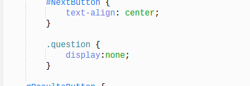
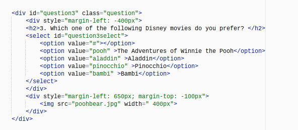
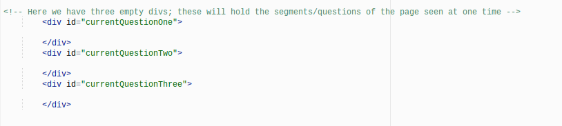
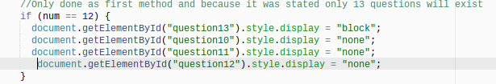

With our fortune telling questions, the html page displaying the questions was very long. Because you can only link one html page to one javascript page, we couldn't divide the questions onto different pages - not literally. However, we could make it look like different pages for the user; that is, we could make different sections disappear and reappear with the click of a button.
The first thing we did was in the html page holding the questions was make all the questions hidden. Using CSS in the head of the page, we made it so all parts with the .question id would display none. This means that the user will not be able to see them, and, most importantly, they wouldn't take up space. This differes from the visibility feature which, when marked hidden, makes things invisible as well except this feature will make it still take up space. We used the display feature because we wanted there to not be empty spaces in the page the users viewed.
We also needed a button. Explained more later, but in our HTML page, we added a next button as a way to start a function, which, in this case, would be used by the user to say they were done with one section and ready to start the next.
Another necessary part of creating a way to rotate information is divs. We used divs in two ways. The first was very straight forward. We put the question and the image we wanted displayed together in one div. A div is mainly a storage spot for information.Using divs like this just guaranteed that certain objects on the page would stay together. Additionally, in each div we set the id for "questionx" with x being the question number, and we set the class to "question". This will come into play later.
The second use for divs is responsible for what is and isn't visible. We only wanted three questions to be shown at one time, so we created three divs. In theory, these would be what the user would see, or three slots. We then set the three divs to have the ids "currentQuestionOne", "curentQuestionTwo", and "currentQuestionThree". After this, we were ready to start the portion of the work that would be in javascript.
Within our javascript page (after linking it to the html page and defining some variables) we started our function that would put questions in the current question divs and display them. The first thing we did was set var num as 0 with a simple equation saying which. The purpose of this was just so we could start off at zero and slowly add the next three questions with the click of the next button. Had we set it as 1, we would be off and question1 would never be displayed.
Second, we started our function by using a DOM element (document.getElementById) to take a variable from the HTML page and use it in our javascript page, the variable being the nextQuestionButton. Then, we added an addEventListener, which basically tells the computer to "listen" for a click of, in this case, the nextQuestionButton. Then, we started the function.
On the next line it uses the DOM element yet again to use the questions in the HTML page, except plus num. This basically says it will get the question that corrsponds with the number, as all are called "question1, question2, question3,...". Then it changes the CSS by adding ".style.display = block" which undoes the CSS hiding it on the HTML page. We did that for all three divs, which rotates which questions are shown.
In addition to this, we needed to hide the previous set of questions displayed. In order to do this, we set an if statement with the condition that num is greater than three. Then, we set the question (num -3) to be display none so that it would eliminate the question that was in the div before it.
We couldn't leave it as is because we had thirteen questions, which means there was one that didn't match the rest. On its own, when getting to the last page, it would display Question 13 again along with questions 11 and 12. In order to fix that, we added if statements.
Our just said that when we got to Question 12 and we pressed the Next button, it would change the CSS of of Question 13 to display block, but it would keep the other questions as display none. We did this by using the DOM for each individual question and putting ".style.display" and setting it to either block or none, like earlier.
